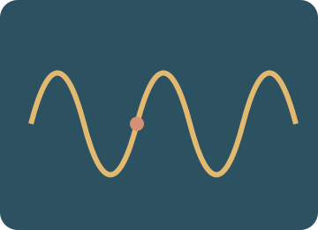

Waves and sound
Make waves, compare sound signals, explore electromagnetic radiation and observe reflection, refraction and diffraction.

Predict. Investigate. Explain.
Preparing the apparatus…
Choose an investigation, then follow the steps.
Starting stories and prediction · one clock, two objects
Compare a head start in position with a delayed release. B waits at its starting position until its start time.
Record and compare your results.
Up to 10 trials per investigation, kept while this page is open. Reloading clears the notebook. These practical notes and lesson checks are not sent to the teacher.
Check your understanding
Connect the model to the physics
Wave speed, frequency and wavelength
A wave transfers energy without a net transport of the medium. v = fλ and T = 1/f. In a transverse wave, oscillations are perpendicular to travel; in a longitudinal wave they are parallel.
Worked example. A 5 Hz wave with wavelength 2 m travels at 10 m/s. Watch one marked particle rather than following a travelling crest.
Pitch, loudness and echoes
Higher frequency means higher pitch. Larger pressure amplitude generally means a louder sound at the same frequency; it does not raise the frequency. Sound needs a medium. Echo distance is half the sound’s round-trip travel.
Worked example. At 340 m/s, an echo after 0.50 s comes from a surface 85 m away.
The Doppler effect
A moving source crowds wavefronts ahead and spreads them behind. For a stationary observer and approaching subsonic source, f′ = fv/(v − vₛ); for recession use v + vₛ.
Worked example. For a 600 Hz siren moving at 20 m/s through air at 340 m/s, a stationary observer hears about 638 Hz ahead and 567 Hz behind.
Electromagnetic radiation
Radio, microwave, infrared, visible, ultraviolet, X-ray and gamma radiation are all transverse electromagnetic waves. All travel at c ≈ 3.00 × 10⁸ m/s in vacuum; frequency rises as wavelength falls.
Worked example. Microwaves can carry communications; infrared is used in thermal imaging; X-rays form images but require controlled exposure. The spectrum diagram is arranged by band, not a linear wavelength scale.
Wave behaviour at boundaries
Reflection changes direction within the original medium. Refraction changes speed and usually direction at a boundary, while frequency stays the same. Diffraction spreads waves at gaps; spreading is more pronounced when the gap is comparable to wavelength.
Worked example. Water waves entering shallower water usually slow down: unchanged f and smaller v mean a smaller wavelength.
Classroom connections
Use the apparatus model to test a prediction, record two trials with one changed condition, then explain the difference with an equation or diagram. Use your teacher’s worksheets for assessed tasks. The revision simulator below offers practice, mixed questions and a Test yourself mode.
Ready to test your understanding?
Choose from 60 questions on waves and sound. Select question areas and levels, practise with explanations or take a Test yourself quiz, then retry mistakes.